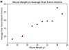
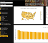
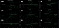
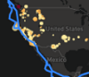
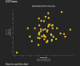
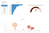

Data analyst and mathematician with masters in math from the University of Minnesota, certificate in data visualization from the University of Minnesota, and 5 years of experience with data work. Primary focus is using data methods to improve business processes and generate accurate and actionable reports. Motivated by leveraging the computer to do repetitive tasks quickly to save company time. Former projects include automating all reporting for a former employer and automating the production scheduling for a multimillion dollar company.
I live in Mounds View, MN with my wife, Alex and our cat, Wario. When I'm not analyzing data, I'm usually on a disc golf course or playing tabletop games with friends.
Repository Name |
Thumbnail |
Github Pages Link |
Tools Used |
Short Description |
|---|---|---|---|---|
Pharmaceutical Data Plots |
 | Jupyter Notebook / Python using the matplotlib, pandas, scipy, and numpy libraries |
In this project, I am running statistical tests to look for correlation between data sets and creating plots to help visualize the findings. |
|
The State of Disc Golf Dashboard |
 | MongoDB, Python, HTML, CSS, JavaScript |
The overall goal of this project is to create a dashboard of visualizations with filter capabilities, giving users the ability to find the perfect area based on their preferences. |
|
Spotify Song Analysis |
 | Jupyter Notebook / Python using the matplotlib, pandas, beautiful soup, scipy, and numpy libraries |
The goal of this project is to analyze the data available from Spotify to answer questions about Spotify Audio Features by song year, correlation between Audio Features and country metrics, and the Spotify Audio Features by song year. |
|
USGS Earthquake Data Webpage |
 | JavaScript, Leaflet, Mapbox, HTML, CSS, D3 JSON and Leaflet goeJSON |
In this project, I built a layered world map that displays all earthquakes from the last 7 days by magnitude and depth as well as the borders of the Earth's tectonic plates. |
|
Interactive Scatter Plot with D3 |
 | JavaScript, D3, HTML, CSS, and Github Pages |
In this project, I built an interactive scatterplot to explore the relationships between aggregated census data by state. The first link will take you to the working version of the website on github pages. |
|
Biodiversity Dashboard with Plotly |
 |
https://joekell.github.io/PlotlyBiodiversityChallenge/ https://joekell.github.io/PlotlyBiodiversityChallenge/README/ |
JavaScript, Plotly, HTML, and Github Pages |
In this project, I built an interactive dashboard to explore the Belly Button Biodiversity dataset, which catalogs the microbes that colonize human navels. The first link will take you to the working version of the website on github pages. |